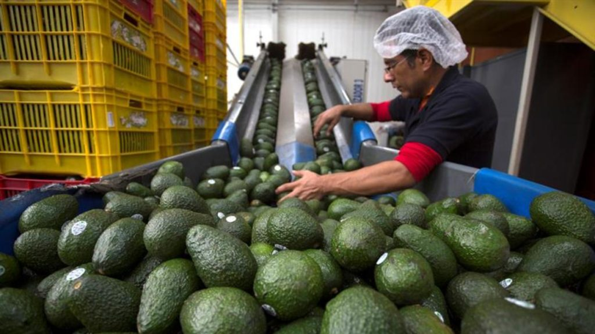

Plantas procesadoras manejan rechazos, mermas, lodos y aguas con alta carga orgánica. La biodigestión los convierte en biogás reduciendo simultáneamente costos de disposición y consumo energético.

Mermas, lodos de lavado, aguas de proceso.
Subproductos no aprovechados, sangre, lodos de tratamiento.
Vísceras, líquidos de proceso, lodos de tratamiento.
Suero excedente, aguas de lavado y CIP.
El biogás cubre buena parte del calor de tu propia planta.